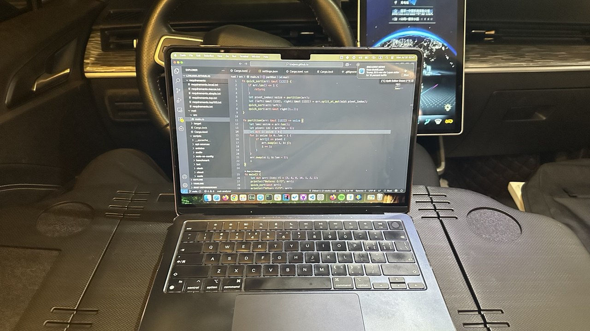

Trabajando en un coche eléctrico | Original, traducido por IA
Trabajando en un Coche Eléctrico
Recientemente, volví a probar trabajar en mi coche eléctrico. Anteriormente, había utilizado un escritorio portátil en el coche, pero seguía siendo incómodo. Necesitaba usarlo en el asiento trasero en lugar del asiento principal.
Recientemente, compré otro tipo de escritorio portátil grande y plegable para el coche. Era más grande y originalmente diseñado para Tesla, lo que lo hacía perfecto para los coches Tesla. Sin embargo, para otros tipos de vehículos eléctricos, aún hay formas de instalarlo, como usar un paquete de papel para llenar el espacio vacío y apoyar un lado del escritorio.
En el uso real, descubrí que en la parte delantera, mis piernas lo sostenían en lugar del paquete de papel imaginado. Además, mi teléfono móvil encaja perfectamente en el escritorio. Hay una ranura específica para sostener los teléfonos móviles sin que se resbalen.
Mi teléfono móvil es un iPhone 14 Pro Max, con un tamaño de pantalla de 6.7 pulgadas. La ranura para el teléfono móvil es del tamaño justo.
En cuanto a la lámpara eléctrica, he compartido detalles en otro ensayo.
Compré mi coche eléctrico alrededor de septiembre de 2022, y su distancia recorrida ha alcanzado aproximadamente 56,000 km a julio de 2025. Lo he utilizado extensamente.
Me he dado cuenta de que en la vida hay muchos productos cuyo potencial o funcionalidad no utilizamos por completo. Tienen muchas posibilidades. Necesitamos aprender a usarlos sabiamente y sacarles el máximo provecho. No se trata del dinero; ya hemos gastado algo para adquirirlos. Lo más importante es aprender y pensar.
Al elegir el título de este ensayo, consideré si debería incluir “EV” en él. Sí, debería. En un coche de gasolina, no es fácil trabajar dentro debido al ruido del motor y los costos de combustible. Sin embargo, un coche eléctrico es perfecto para trabajar dentro del coche.
Otra cosa en la que pensar es adónde debo ir. ¿Qué escena hermosa quiero ver desde mi coche? ¿Qué buenos lugares quiero visitar? Los humanos aún no somos buenos en esto. La urbanización solo ha ocurrido en las últimas décadas en China. La gente va a lugares turísticos o centros comerciales los fines de semana. Básicamente, en la Tierra, hay montañas y ríos. Hay un dicho chino que dice algo así: viajar entre montañas y jugar con el agua.
Tengo un dron DJI, DJI Mini 2. Una forma de encontrar lugares es a través de la comunidad DJI. Hay recomendaciones de lugares para tomar fotos con DJI. Otra forma es recordar mi memoria, en Guangzhou, ir a Changlong, algún carnaval, Calle Beijing, Upside y la calle Nueve, y la Torre de Guangzhou, la Montaña Baiyun.
Creo que viajar es como cualquier otra cosa, necesitas hacer mucho y luego tendrás más lugares o lugares turísticos para visitar. Es como software o programación. Cuanto más sabes, más sabes que no sabes.
El río Liuxi en Guangzhou es bueno. Quiero acercarme a ellos en diferentes lugares. Es como el océano. Puedes verlos en diferentes playas con diferentes sentimientos. Me encanta el océano y la playa. Probablemente, cuando crecí, no los vi mucho. Todavía recuerdo la primera vez que vi la playa, la playa Dameisha en Shenzhen.
Tengo dos sillas plegables en mi coche. Puedo usarlas, pero son para el exterior, no tienen aire acondicionado. Así que probablemente, en la temporada en la que no necesito aire acondicionado, saldré más, como en invierno o principios de primavera o finales de otoño.
Estoy seguro de que vivo en el futuro de esta manera. He vivido en Guangzhou alrededor de 15 años a partir de 2025. Pero aún hay muchos lugares a los que no he ido, especialmente para aquellos edificios de oficinas o comunidades departamentales. Además de mi casa o la oficina de mi empleador, ¿por qué iría a otro edificio de oficinas?
Se puede entender que si soy fundador de una startup y voy a otros edificios de oficinas para reunirme con personas y discutir cosas de negocios.
Rara vez lo hago. Solo a veces voy a edificios departamentales donde viven mis familiares.
 Fuente: Autocaptura
 Fuente: pinduoduo.com
Fuente: pinduoduo.com
Lámpara USB Brillante y Conveniente para Uso en el Coche
Usar una lámpara en mi coche hace que el interior esté brillante, por lo que el brillo dentro y fuera es aproximadamente el mismo. Esto ayuda a que mis ojos se sientan más cómodos al conducir. Elegí una lámpara alimentada por USB sin batería. Esto significa que el enchufe conectado al encendedor de cigarrillos en mi coche eléctrico puede alimentar la lámpara. Cuando cierro el coche, la lámpara se apaga automáticamente.
Antes, usaba una que tenía batería. Debido a que este tipo de lámpara se usa a menudo en casa para estudiar, etc., tener una batería las hace fáciles de mover sin necesidad de conectarlas a un enchufe. Por lo tanto, con una lámpara que tiene batería, necesitaba tocar la base de la lámpara para apagarla.
Ahora uso una lámpara alimentada por USB sin batería, por lo que no necesito apagarla manualmente cuando me voy y cierro el coche.
En la foto, puedes observar el interruptor inteligente en el enchufe. Lo puse allí sin saber cómo usarlo. Lo vi en mi casa y pensé que podría usarlo en el coche algún día. En casa, uso el interruptor inteligente para controlar el dispensador de agua, que puede ser realmente molesto cuando hace ruido mientras duermo.
 Fuente: Autocaptura
Fuente: Autocaptura